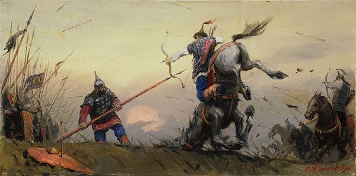

В прошлом выпуске радостный Дима отмечал победу над Бегичем, а опечаленный Мамай подсчитывал оставшиеся полки и задумчиво чесал репу на предмет откуда бы взять еще войска?

Поскольку с наличными силами после последней битвы было швах, причем ситуация еще больше усугублялась методичным продвижением Тохтамыша, который не считал ни свои, ни, тем более, чужие потери, дело было плохо. Хан–продюсер, поняв, что грубая сила – не его конек, прибегнул к хитрости, коей он всегда отличался. Быстренько раздав бабла всем, кто мог им соблазниться (по большей части генуэзцам – толковой пехоты у монгол вообще было немного, а уж такого уровня – тем более), он договорился с союзниками: литовцами и рязанцами. Первые резонно считали, что чем больше кипеша на востоке, тем меньше у них, вторые же были настолько зашуганы постоянными приходами приветов от Мамая, что были готовы вообще на все, лишь бы эти толпы хотя бы пяток лет не приходили.
Расчет хан–продюсера был прост: русские собирают войска и тупят на берегу Оки, тем временем к Мамаю подтягиваются союзники, он пускает их вперед в качестве смазки для копий, а сам высаживается уже чуть погодя и добивает уцелевших. Однако, еще готовясь к битве, Дима почуял что–то недоброе в воздухе. Поэтому, собрав свое войско, шустро повел его не по прямой, а кривыми тропами, причем через Рязанское княжество. Бойцы получили четкий приказ: рязанцев, хоть они и редиски, не обижать, деревень не жечь, идти тихо, но быстро. По пути Дима добрал войска из догнавших его новгородцев и литовцев (тех, что решили поставить на другую сторону) и в качестве финального аккорда commando–style операции внезапно переправился через Оку.
От такого поворота офигел не только Мамай, но и жители Москвы. История уже показала, что оставлять у себя в тылу реку, не имея спасательных шлюпок – чревато. Памятуя об этом, москвичи и все поданные Димы немедленно заказали панихиду по князю и стали готовиться к приходу татар. Дмитрий же, чтобы еще более удивить противника, внезапно перешел Дон и сжег за собой все мосты. В результате такого поворота событий рязанцы и литовцы остались на том берегу жевать сопли, а Мамай почуял, что его хитрый план неудержимо накрывается медным тазом. Что подумали русские войска, печально взирая на тлеющие бревна, уплывающие вниз по Дону, осталось неизвестным.
О самой Куликовской битве написано столько, что повторяться по сотому разу необязательно. Главную роль в сражении сыграл засадный полк (Дима действительно проявил себя хитрым парнем). Когда монголы уже почти добили один из флангов русских и прижали их к реке, сзади из леса выползла еще одна толпа, с задорным матом начавшая раздавать всем, кто был неславянского вида. Татары, увидев такой zombie–infestation (они–то думали, что русских больше не осталось, значит с тыла наседают покойники), резко потеряли в боевом духе и попытались смотаться. Ага, как же.
Сам Мамай, издалека углядев внезапный финт ушами засадного полка, сразу смекнул, что дело табак, развернулся и с малыми силами помчался вдаль, на ходу размышляя, что делать и как быть – последний «легитимный» хан, от лица которого он и правил, остался где–то там, на поле.
Дмитрий, несмотря на все ухищрения с переодеваниями в простого ратника, таки получивший по кумполу, принял здравое решение вслед за монголами в степи не лезть, а вернуться обратно.
Рязанцы и литовцы, оценив зрелище разгрома на той стороне реки, в драку решили не соваться и вернулись к себе обратно, правда, попутно пограбив московские обозы с ранеными и добычей. Олег Рязанский так вообще глубоко задумался, на ту ли лошадь он поставил, и что ему теперь за это будет.
Мамай, как уже было сказано выше, мчался в сторону Крыма, судорожно подыскивая нового ставленника и убеждая остатки войска, что это все временные трудности, Тохтамыш неудержимо пер на востоке, подчиняя все новые земли, Дима получил–таки погоняло Донской и левел–ап, литовцы вернулись к себе и занялись междоусобицами, Олег упражнялся в произнесении речей вида «Не виноватая я, он сам пришел», генуэзцы неторопливо разлагались в русском черноземе.
А что из этого получилось, вы узнаете в следующем выпуске.